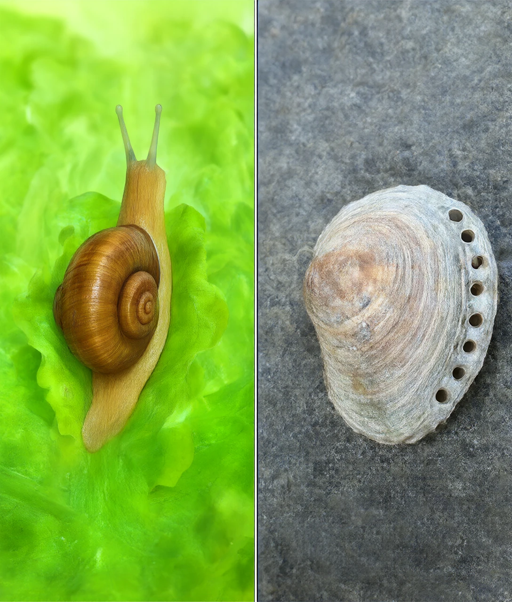
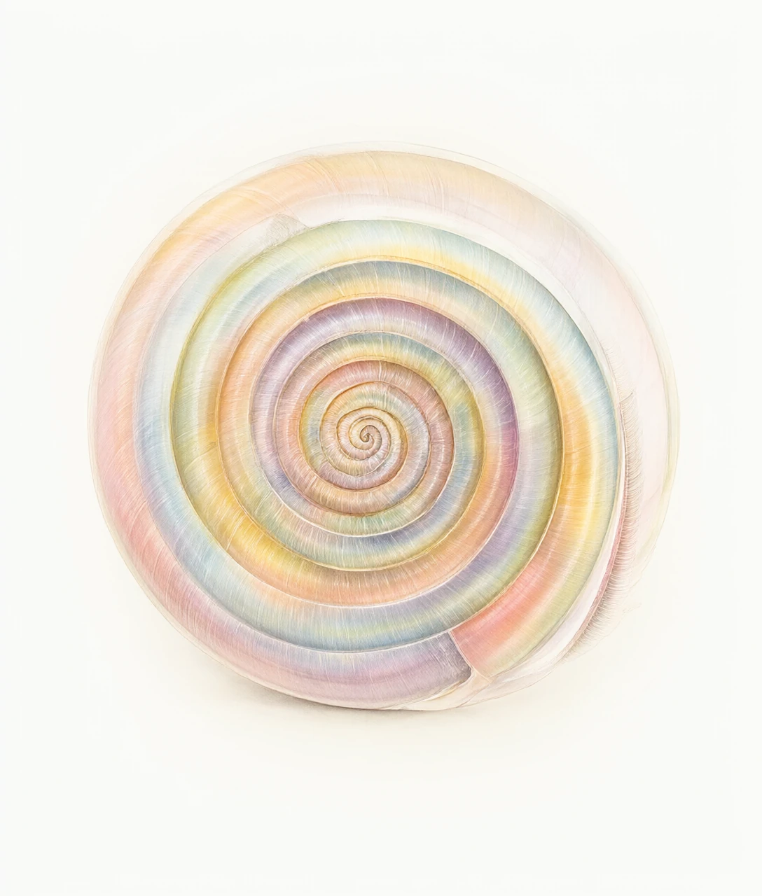
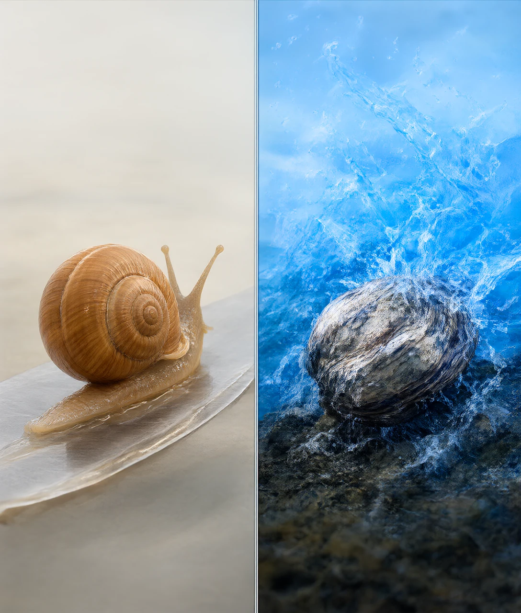
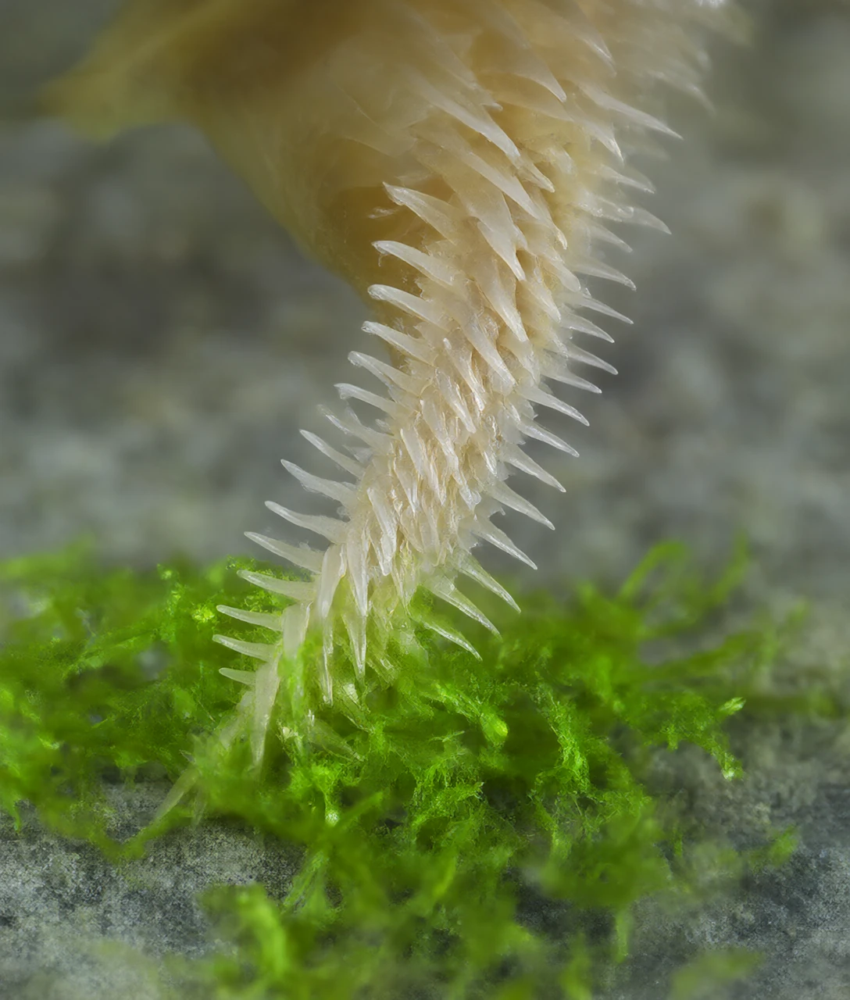
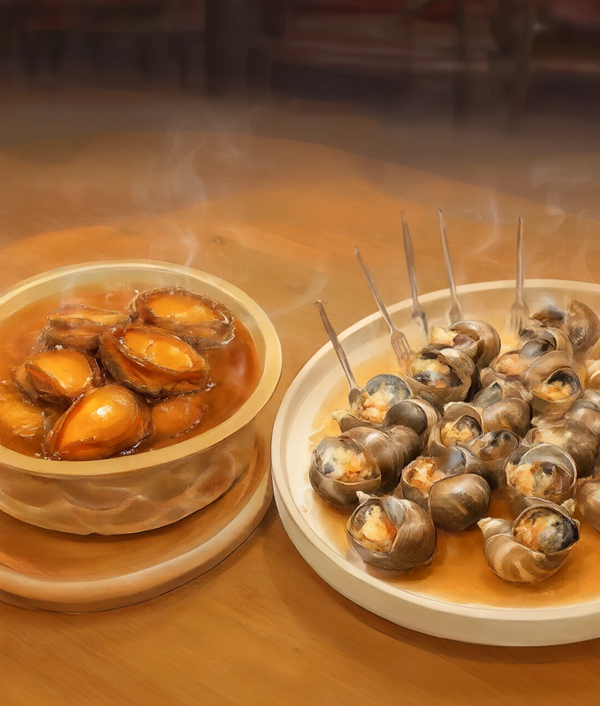

一个在菜园里慢慢爬，一个在礁石上死死吸——它们竟然是同一个家族的亲戚
餐厅的菜单上，一只鲍鱼要好几百块，一盘法式烤蜗牛也不便宜。可你如果在菜园里抓到一只蜗牛，多半只会把它扔回草丛里。
奇怪的是：这两种一个住陆地、一个住海里，一个软乎乎、一个扁墩墩的动物，科学家却把它们分进了同一个班。它们到底哪里像？又为什么一个贵、一个便宜？我们从它们最像的那件东西说起——背上的壳。
先说结论：蜗牛和鲍鱼都属于腹足纲（Gastropoda）。这个名字听起来很学术，但意思特别直白——「腹」是肚子，「足」是脚，合起来就是「用肚子当脚走路的动物」。
那它们凭什么算一家？如果我们不看长相，只看身体的「设计图纸」，就会发现它们用的是同一套积木：
① 一个头，头上长着眼睛和触角；② 一大块肌肉做的脚，长在身体下方；③ 一个装了全部内脏的「袋子」，上面盖着一片壳。
这就是生物分类的秘密：不看像不像，看图纸是不是同一张。就像用同一套乐高，你可以搭出一辆车，也可以搭出一只小狗，外形完全不同，但零件来自同一个盒子。蜗牛和鲍鱼，就是这套「腹足纲积木」搭出来的两种造型。

我们穿衣服，是先有衣服，再套上去。但蜗牛的壳完全相反：壳是它自己的身体一点点分泌出来的，是身体的一部分，就像我们的指甲和头发，只不过硬得多。
那它是怎么长的？这就要认识一层特殊的皮肤——外套膜。这层膜像一件披风，紧紧包着里面的内脏，它的边缘就是「打印机喷头」：不断从身体里取出两种原料——碳酸钙（就是石头、粉笔的主要成分）和一种蛋白质胶水——然后在壳口边缘一层一层地往外挤、往边上堆。
小蜗牛刚从卵里出来的时候，壳只有几毫米，就已经是完整的一圈了。它一辈子都在做同一件事：把壳的开口往大里扩，后面再加厚加长。所以壳上那一圈一圈的纹路，其实是它成长的日记，跟树的年轮一样。
那为什么是螺旋的呢？这里有个很实在的原因：蜗牛的「内脏袋子」本身就是盘成一团的，包着它的壳只要贴着这团肉长，就自然会长成螺旋形。再加上壳口边缘每次都往「稍微偏一点」的方向延伸，一圈接一圈，就绕出来了。螺旋不是设计出来的漂亮造型，而是「贴着长的必然结果」。
那鲍鱼为什么不螺旋？因为它要干另一件事——贴着礁石对抗海浪。海浪拍过来的力气有多大？能把人推倒。所以鲍鱼的壳长成了扁扁的耳朵形状，像一只低矮的帐篷，迎面阻力最小，还能整个扣在岩石上。它的壳边缘还有一排小孔，从侧面看起来像一排小烟囱。
这些小孔是拿来做什么的？答案出人意料：排水和排气。鲍鱼壳里面有条水渠，鳃在其中呼吸，水流从壳边进来、带着废气从那一排孔排出去。同时，当鲍鱼把身体压向岩石形成真空吸附时，壳下的水也需要有个出口——这些孔就是它的「排水口」。

腹足纲的「足」，就是蜗牛和鲍鱼身体下面那整块肌肉。这是它们最厉害的一件工具，但两家用法完全不同。
蜗牛靠「波浪」前进。它足底的肌肉不是一起用力，而是一小段一小段地收缩，像把身体放在传送带上：后段收缩往前推，前段再伸出去站稳，波浪就顺着脚底往后跑。你看蜗牛爬过玻璃，会看到脚底流过一道道波纹，那就是肌肉波。它有多慢？一只花园蜗牛大概每小时只能爬几米，最快一天也就五十米左右。
光有肌肉波还不够——地面是粗糙的，摩擦力会让它擦伤。所以它一边爬一边分泌黏液。这层黏液身兼三职：一是润滑油，把摩擦变小；二是保护垫，让脆弱的足底不会划破；三是路标，同类的蜗牛能顺着黏液痕迹找到伙伴。
黏液保护得到底有多好？你可以在家做个小实验（需要大人陪着）：把一片没有齿的钝刀背或薄塑料片斜放着，让蜗牛爬过去。它几乎不会被割伤。因为它的身体压在黏液上，受力被分散了，就像人跳到气垫上而不是跳到尖石头上。
鲍鱼靠「吸」，而且是硬功夫。它的足是一整块有力的吸盘。当它把足贴到礁石上，先挤出中间的水，形成一片接近真空的区域，外面的大气压就把它的身体死死压在石头上。这股力量有多大？成年鲍鱼能抵抗几十公斤的拉力——这也是为什么采鲍鱼的人必须趁它没防备，突然一下把它铲下来，一旦让它吸牢，用撬棍也很难弄下来。
追问一句：为什么鲍鱼非要长得这么结实？因为海浪不会跟它商量。海浪天天冲，站不稳的早就被冲走了；活下来的，都是「天生抓得牢」的那一批。这就是自然选择——不是鲍鱼想变强，而是不强壮的都被大海淘汰了。

人吃饭靠咬，牛吃草靠磨，那蜗牛和鲍鱼用什么？它们嘴里没有能上下咬合的牙，却有一件更奇特的工具——齿舌（radula）。
齿舌长什么样子？想象一条柔软的带子，上面整整齐齐排着一排又一排、成百上千颗微小的牙齿，像一条迷你传送带。吃东西的时候，它来回伸缩，像用锉刀一样把食物刮下来。蜗牛就用它刮菜叶、刮墙上的绿藻、刮果皮上甜甜的那一层。
那鲍鱼呢？鲍鱼也吃藻，但它的藻长在石头上——紧紧贴着礁石，用手抠都抠不下来。这就带来一个难题：想刮掉这么牢固的食物，牙齿必须极其耐磨，否则一顿饭就把牙磨平了。
于是演化给鲍鱼造出了一件「超级材料」。科学家把鲍鱼齿舌放到显微镜下看，发现里面长着极细的纤维，纤维里含铁的氧化物——相当于在有机的「软材料」里织进了一张「铁纳米网」。这种结构的硬度，比很多陶瓷还高，被公认为地球上最硬的生物材料之一，强度甚至超过蜘蛛丝。
现在你明白这条因果链有多长了吧：藻贴在石头上 → 刮下来很费力 → 牙齿必须耐磨 → 演化出含铁的纳米纤维牙齿 → 人类的材料科学家跑来偷师。一条链子连了几千万年，也没停。
还有个细节特别聪明：蜗牛和鲍鱼的牙齿是磨损型的消耗品。用坏了怎么办？齿舌的底部一直在不停地往前「长」出新的牙齿，前面的磨掉了，后面的就顶上来，跟传送带一样。所以它们从来不缺牙——从出生到老，都在换新的。

先解一个大家最常问的谜：鲍鱼为什么贵？
第一个原因是它长得慢。鲍鱼住在较冷的海水里，吃的是海藻。冷水让它的新陈代谢变慢，海藻的营养又不高，所以它长肉特别费时间——要养到能卖的大小，通常需要三到五年。而蜗牛在温暖、食物丰富的环境里，一年多就能长大。
第二个原因是它挑地方。鲍鱼只肯待在礁石区、水流干净的海域，不能像鸡鸭那样随便圈一块地就养。养殖户要搭专门的笼子、喂够量的海藻、看牢水温和水质，成本自然高。
第三个原因是它太会吸。还记得上一章那块足肌吗？采鲍鱼必须趁它没贴牢时突然下手，人工成本很高。你多花的钱里，有一部分其实是买它那块「不肯走」的肌肉。
那为什么鲍鱼肉吃起来那么弹、那么有嚼劲？因为那块足肌里富含胶原蛋白，是一种很结实的蛋白质纤维。有趣的是，它的脾气很怪：大火快煮会变硬得像橡皮，慢火久炖反而会变软糯。
为什么？因为高温会让胶原纤维激烈收缩，把水分挤出去，于是又老又韧；但如果给足时间，热水会把胶原慢慢拆解成明胶——一种会融化的软蛋白，也就是肉汤冷却后会变成「果冻」的那种东西。所以你吃到的软糯鲍鱼，本质上是它的肌肉蛋白质被时间拆散了。厨师说「慢工出细活」，背后其实是清清楚楚的化学。
蜗牛这边就简单多了。它们吃蔬菜瓜果，什么都吃；可以养在室内的箱子里，长得快。法国菜里那道著名的烤蜗牛，主角通常是罗马蜗牛，配蒜香黄油一起烤。
最后一条，比价格重要一万倍：野生的螺和蜗牛，绝对不能随便吃。
为什么？因为它们是寄生虫的中间宿主——寄生虫会先住进它们身体里，长大以后才传染给下一个倒霉的动物（也包括人）。比如「广州管圆线虫」，它钻进人的身体后可能跑到大脑附近，引起严重的脑部疾病；而福寿螺就是它最常见的中间宿主之一。
更要紧的是：这些寄生虫很怕热，但怕的是彻底的高温。很多人以为「开水烫一下」「泡点酒」「蘸芥末和酱油」就没事了——那完全不够，寄生在螺里的幼虫能扛住短时间的低温和酒精。真正安全的做法只有一个：烧熟、煮透，让中心温度足够高、持续足够久。这条规则里没有例外。
所以记住这句话：蜗牛和鲍鱼能吃，不是因为有壳，而是因为它们把一生都长成了肌肉——蜗牛用肌肉爬，鲍鱼用肌肉抱紧石头。而我们能安全地吃，靠的是另外四个字：彻底煮熟。
